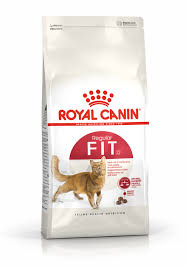

Neo ir mans kaķis. Viņš ir mīļš un rotaļīgs trīs gadus vecs kaķis, kurš ir ļoti pieķēries manai ģimenei. Neo ir mīksts pelēks kažociņš, balts vēderiņš un liels, gudrs skatiena dziļums. Mēs Neo ieguvām 22. februārī, kad viņam vēl bija tikai viens mēnesis. Lai gan Neo ir sfinkss, viņam tomēr ir spalvas, un viņš pieder arī pie elfu šķirnes, kas padara viņu īpašu un unikālu.
| Parametrs | Vērtība |
|---|---|
| Vārds | Neo |
| Vecums | 3 gadi |
| Kažoka krāsa | Pelēka ar baltu |
| Raksturs | Draudzīgs, rotaļīgs |
Neo ēd sauso barību Royal Canin, kas viņam ļoti garšo. Viņš parasti apēd nelielas porcijas vairākas reizes dienā. Katru reizi, kad viņš dzird, kā barību liek bļodiņā, viņš skrien uz virtuvi ar priecīgu murrāšanu.
Klikšķini uz barības bildi vai šeit, lai atvērtu veikaliņu, kur to nopirkt: 
Noskaties šo nelielu video par Royal Canin Sensory kaķu barību.
Ja vēlaties nopirkt un izmēģināt royal canin, tad uzspiediet šeit!